Chromatin, histone marks and DNA methylation
Every cell in your body carries (almost) the same genome, yet a neuron and a B cell use very different genes. This lecture is about the layer of information on top of the DNA sequence that helps decide which genes a cell uses, and remembers that decision.
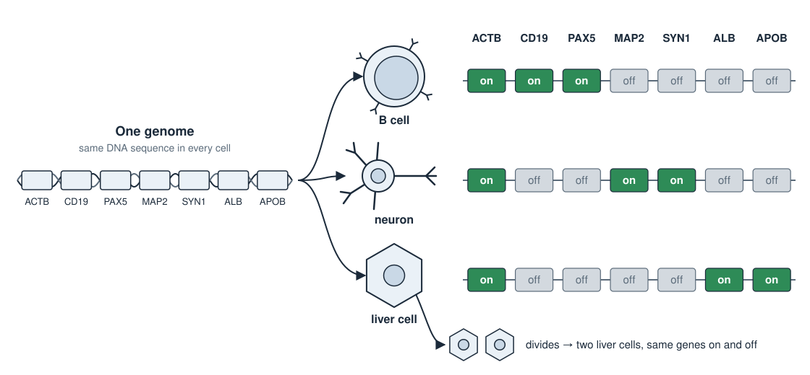
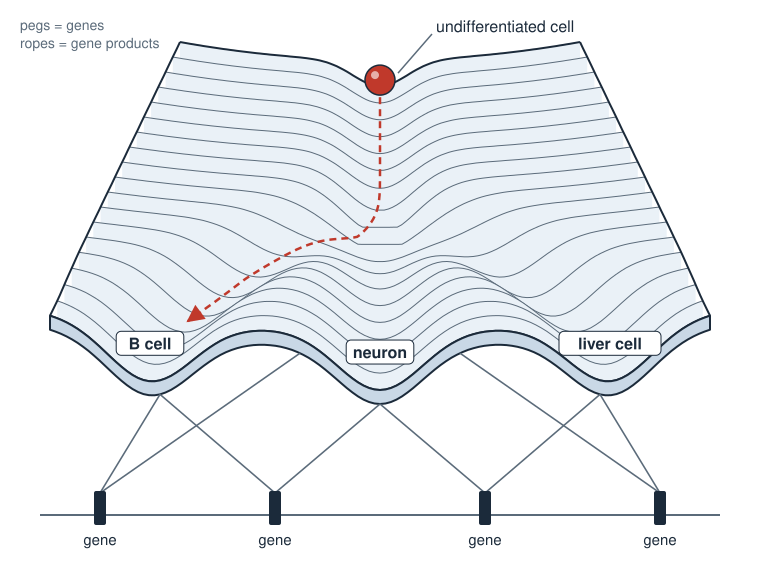
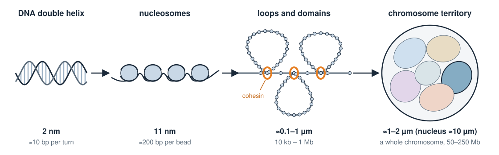
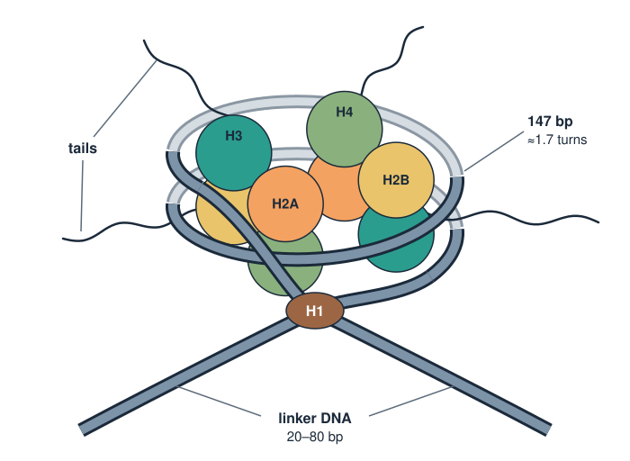
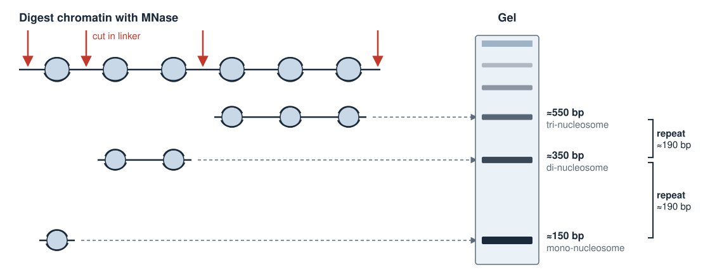
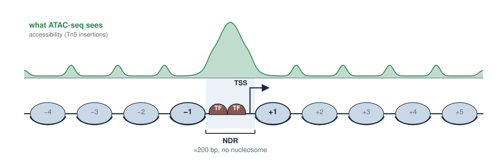
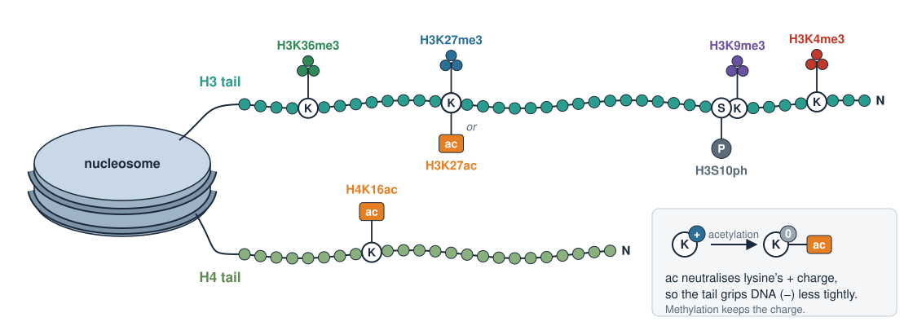
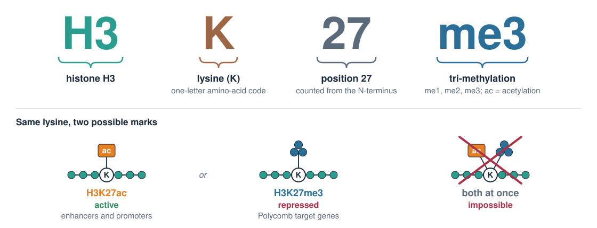
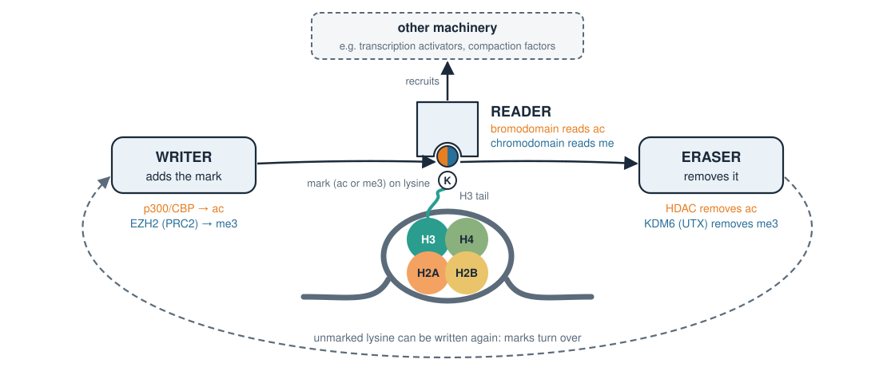
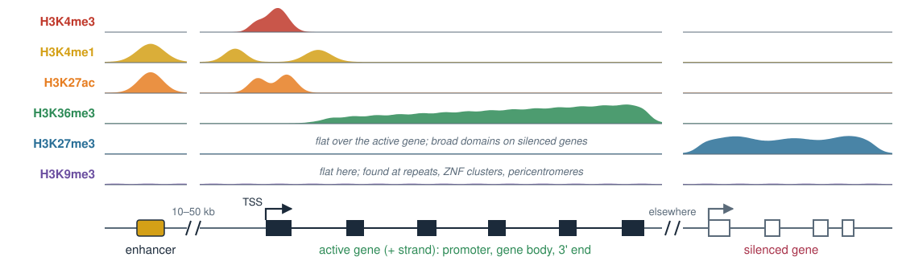
| mark | where | meaning |
|---|---|---|
| H3K4me3 | promoters (around the TSS) | active or poised promoter |
| H3K4me1 | enhancers (and flanks of promoters) | enhancer, active or primed |
| H3K27ac | active promoters and enhancers | active regulatory element |
| H3K36me3 | bodies of transcribed genes | transcription has passed here |
| H3K27me3 | broad domains over silenced genes | Polycomb repression (facultative) |
| H3K9me3 | repeats, ZNF gene clusters, pericentromeres | constitutive heterochromatin |
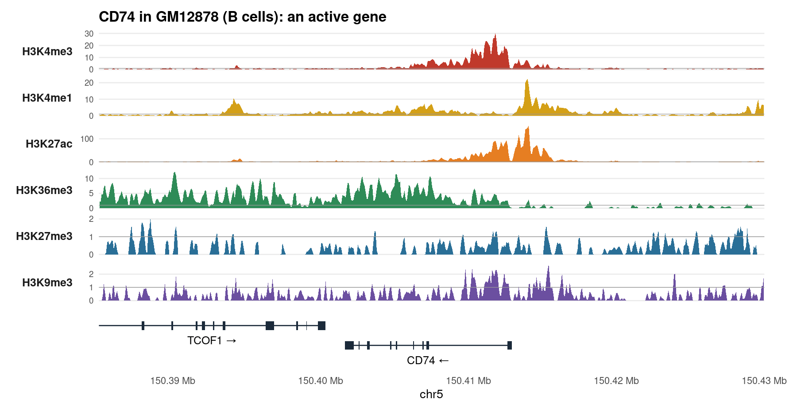
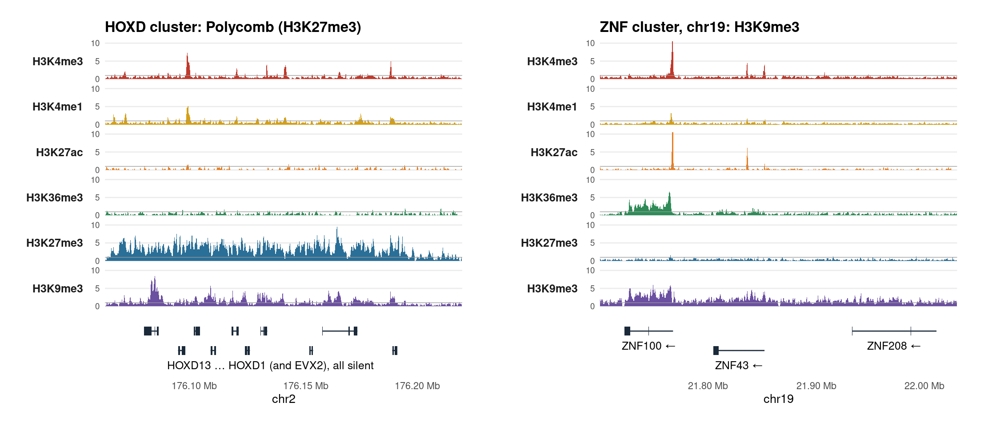
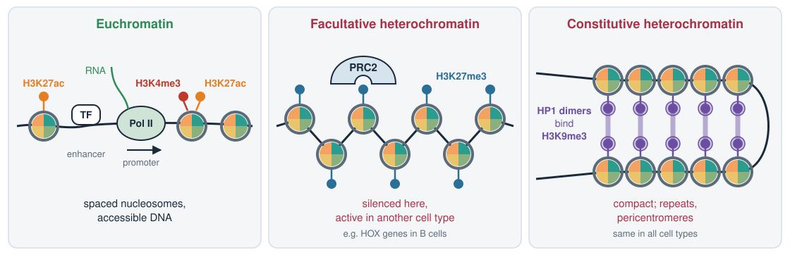
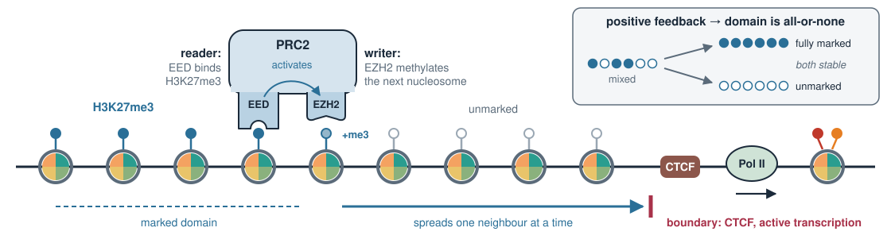
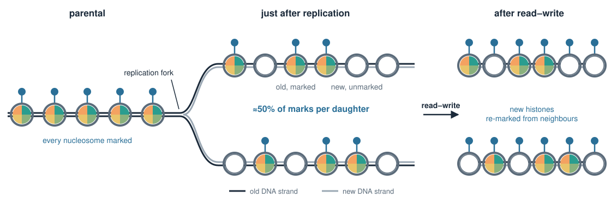
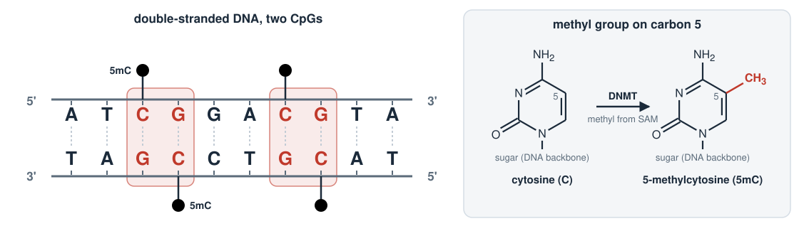
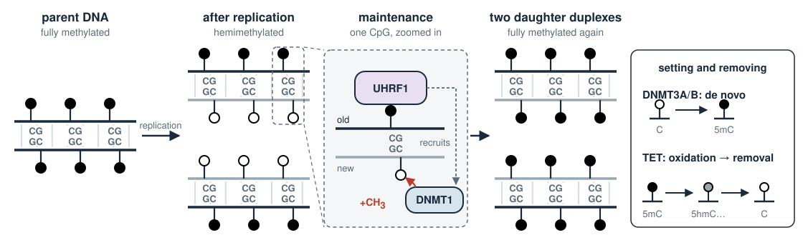
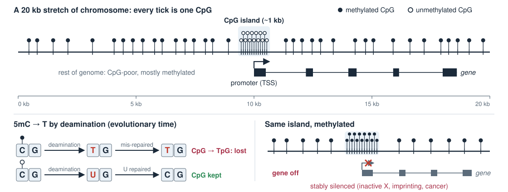
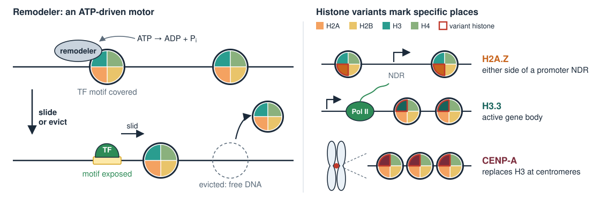
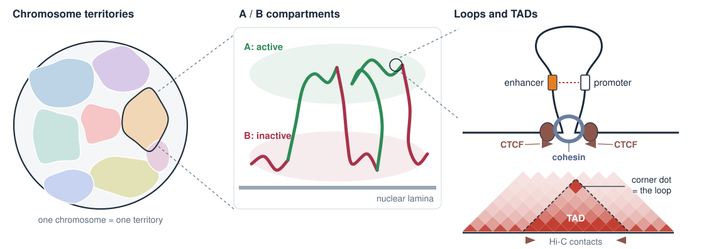
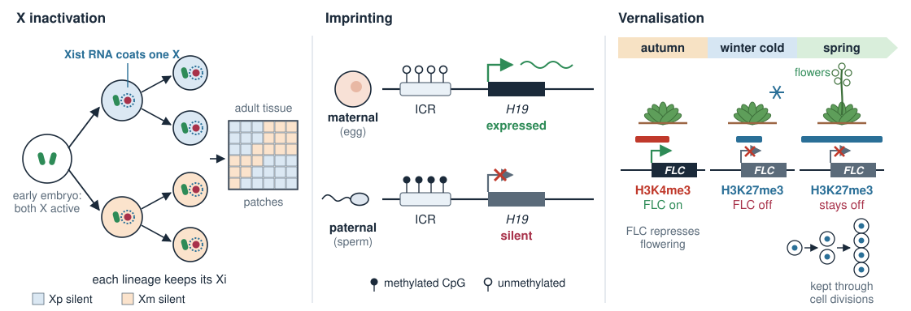
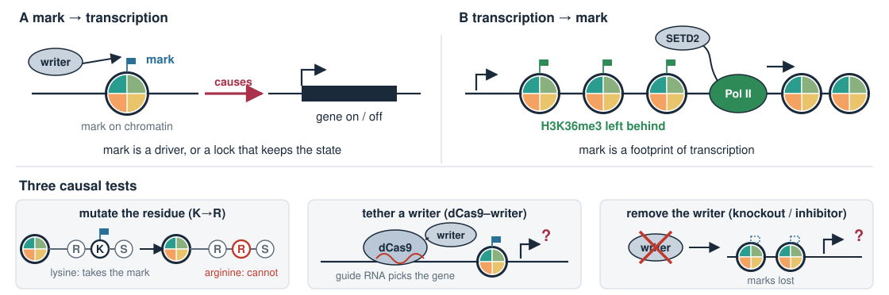
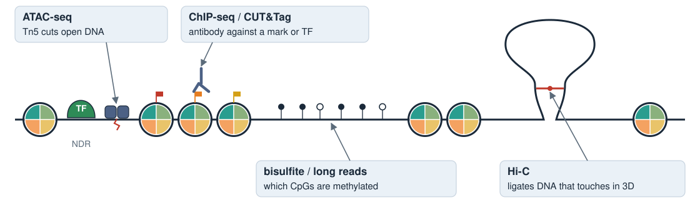
| question | assay | units |
|---|---|---|
| Where is the DNA accessible? | ATAC-seq (DNase-seq, MNase-seq) | ATAC-seq block |
| Where is a histone mark or a TF? | ChIP-seq, CUT&RUN, CUT&Tag | ChIP-seq block |
| Which CpGs are methylated? | bisulfite / EM-seq, arrays, long reads | methylation block |
| Which regions touch in 3D? | Hi-C, Micro-C | 3D genome block |
| idea | key fact |
|---|---|
| epigenetic | narrow: heritable without sequence change; broad (epigenomics): any chromatin state |
| nucleosome | 147 bp around an octamer (H2A, H2B, H3, H4 ×2); repeat about 190 bp |
| open chromatin | nucleosome-depleted regions at active promoters and enhancers |
| histone marks | named histone–residue–modification: H3K27ac; written, read, erased by enzymes |
| active marks | H3K4me3 (promoter), H3K4me1 (enhancer), H3K27ac (active), H3K36me3 (gene body) |
| repressive marks | H3K27me3 (Polycomb, facultative), H3K9me3 (HP1, constitutive) |
| memory | read–write feedback for histone marks; DNMT1 + UHRF1 copy CpG methylation |
| CpG islands | unmethylated, CpG-rich promoters; methylated when stably silenced |
| caution | correlation is not causation: many marks follow transcription |
Not required reading and not examined. For those who want the primary literature.